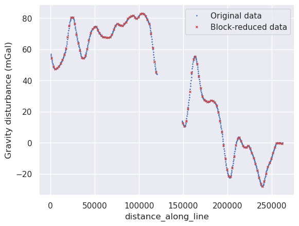
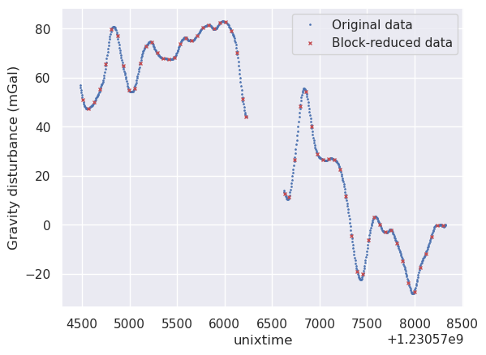
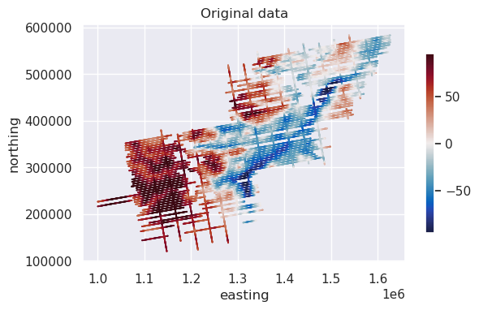
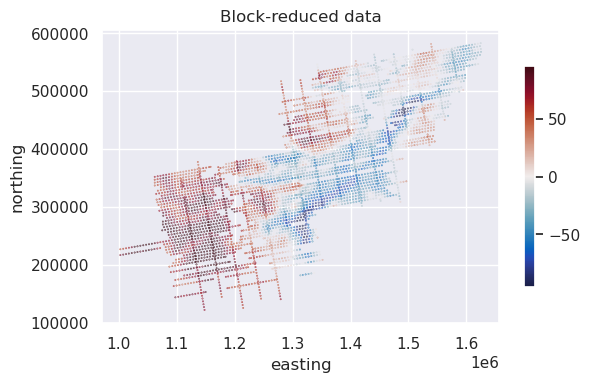
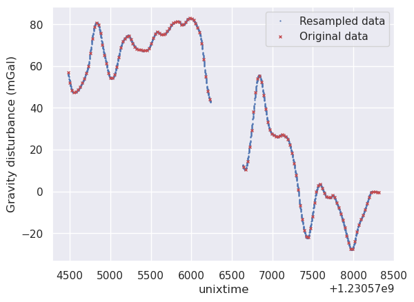
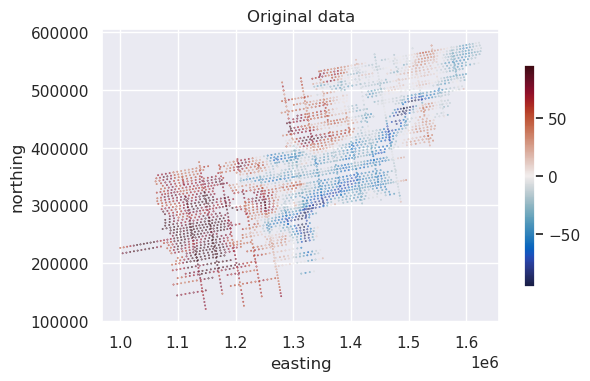

2. Change samping frequency#
Sometimes we require resample survey data at either a heigher or lower sampling frequency. Here we show how to do both.
[1]:
# %load_ext autoreload
# %autoreload 2
import cmocean
import matplotlib.pyplot as plt
import numpy as np
import pandas as pd
import verde as vd
import airbornegeo
/home/sungw937/airbornegeo/.pixi/envs/default/lib/python3.14/site-packages/tqdm/auto.py:21: TqdmWarning: IProgress not found. Please update jupyter and ipywidgets. See https://ipywidgets.readthedocs.io/en/stable/user_install.html
from .autonotebook import tqdm as notebook_tqdm
[2]:
data_df = pd.read_csv("data/AGAP_gravity_survey_processed.csv")
data_df = data_df[
[
"easting",
"northing",
"line",
"unixtime",
"distance_along_line",
"grav_disturbance_filt",
]
][::5] # every 5th point
data_df.head()
[2]:
| easting | northing | line | unixtime | distance_along_line | grav_disturbance_filt | |
|---|---|---|---|---|---|---|
| 0 | 1.000024e+06 | 226237.330771 | 1 | 1.229507e+09 | 0.000000 | 49.38 |
| 5 | 1.000319e+06 | 226283.309168 | 1 | 1.229507e+09 | 299.027209 | 49.71 |
| 10 | 1.000613e+06 | 226327.808992 | 1 | 1.229507e+09 | 595.833891 | 50.01 |
| 15 | 1.000903e+06 | 226371.179740 | 1 | 1.229507e+09 | 888.955840 | 50.27 |
| 20 | 1.001192e+06 | 226414.710863 | 1 | 1.229507e+09 | 1181.733769 | 50.52 |
2.1. Reduce sampling frequency#
For this we will use block-reduction, where we define spatial windows (1D), or blocks (2D), and for all data within the block, retain only the mean or median values.
[3]:
# extract a single line from the survey
line_df = data_df[data_df.line == 8]
line_df
[3]:
| easting | northing | line | unixtime | distance_along_line | grav_disturbance_filt | |
|---|---|---|---|---|---|---|
| 21815 | 1.064934e+06 | 327364.065720 | 8 | 1.230574e+09 | 202.954030 | 56.97 |
| 21820 | 1.065268e+06 | 327411.697676 | 8 | 1.230574e+09 | 540.476913 | 55.86 |
| 21825 | 1.065601e+06 | 327464.248325 | 8 | 1.230574e+09 | 878.033672 | 54.83 |
| 21830 | 1.065934e+06 | 327524.876461 | 8 | 1.230574e+09 | 1216.298627 | 53.83 |
| 21835 | 1.066267e+06 | 327589.259632 | 8 | 1.230574e+09 | 1555.357945 | 52.86 |
| ... | ... | ... | ... | ... | ... | ... |
| 25255 | 1.321821e+06 | 373028.825792 | 8 | 1.230578e+09 | 261161.216753 | -0.68 |
| 25260 | 1.322151e+06 | 373081.094428 | 8 | 1.230578e+09 | 261495.865268 | -0.63 |
| 25265 | 1.322480e+06 | 373141.185876 | 8 | 1.230578e+09 | 261829.523736 | -0.47 |
| 25270 | 1.322807e+06 | 373203.581372 | 8 | 1.230578e+09 | 262162.742950 | -0.22 |
| 25275 | 1.323135e+06 | 373265.681016 | 8 | 1.230578e+09 | 262496.663302 | 0.07 |
693 rows × 6 columns
2.1.1. Block-reduce by distance#
By setting reduce_by to ‘distance_along_line’ and spacing to 2000, we can block reduce the data to have 1 point every 2000 meters.
[4]:
blocked_line = airbornegeo.block_reduce(
line_df,
np.median,
spacing=2000,
reduce_by="distance_along_line",
)
blocked_line
[4]:
| distance_along_line | easting | northing | line | unixtime | grav_disturbance_filt | |
|---|---|---|---|---|---|---|
| 0 | 1047.166150 | 1.065768e+06 | 327494.562393 | 8.0 | 1.230574e+09 | 54.330 |
| 1 | 3090.706931 | 1.067777e+06 | 327868.671771 | 8.0 | 1.230575e+09 | 49.095 |
| 2 | 5121.188200 | 1.069772e+06 | 328242.618483 | 8.0 | 1.230575e+09 | 47.350 |
| 3 | 7161.536703 | 1.071772e+06 | 328645.464282 | 8.0 | 1.230575e+09 | 47.825 |
| 4 | 9206.329651 | 1.073790e+06 | 328976.197080 | 8.0 | 1.230575e+09 | 48.940 |
| ... | ... | ... | ... | ... | ... | ... |
| 112 | 253340.621952 | 1.314120e+06 | 371682.595111 | 8.0 | 1.230578e+09 | -2.910 |
| 113 | 255348.383383 | 1.316093e+06 | 372053.647164 | 8.0 | 1.230578e+09 | -0.215 |
| 114 | 257337.687975 | 1.318042e+06 | 372450.672575 | 8.0 | 1.230578e+09 | -0.105 |
| 115 | 259494.763940 | 1.320169e+06 | 372809.857086 | 8.0 | 1.230578e+09 | -0.080 |
| 116 | 261662.694502 | 1.322315e+06 | 373111.140152 | 8.0 | 1.230578e+09 | -0.540 |
117 rows × 6 columns
[5]:
ax = line_df.plot.line(
"distance_along_line",
"grav_disturbance_filt",
style="bp",
ms=1,
label="Original data",
)
ax = blocked_line.plot.line(
"distance_along_line",
"grav_disturbance_filt",
style="rx",
ms=3,
ax=ax,
label="Block-reduced data",
)
ax.set_ylabel("Gravity disturbance (mGal)")
[5]:
Text(0, 0.5, 'Gravity disturbance (mGal)')

2.1.2. Block-reduce by time#
By setting reduce_by to ‘unixtime’ and spacing to 60, we can block reduce the data to have 1 point every minute along the flight.
[6]:
blocked_line = airbornegeo.block_reduce(
line_df,
np.median,
spacing=60,
reduce_by="unixtime",
)
blocked_line
[6]:
| unixtime | easting | northing | line | distance_along_line | grav_disturbance_filt | |
|---|---|---|---|---|---|---|
| 0 | 1.230575e+09 | 1.066938e+06 | 327715.929722 | 8.0 | 2238.340303 | 51.000 |
| 1 | 1.230575e+09 | 1.071104e+06 | 328504.882220 | 8.0 | 6478.392083 | 47.520 |
| 2 | 1.230575e+09 | 1.075127e+06 | 329234.502637 | 8.0 | 10568.251984 | 50.170 |
| 3 | 1.230575e+09 | 1.079154e+06 | 329908.814386 | 8.0 | 14652.187462 | 55.325 |
| 4 | 1.230575e+09 | 1.083161e+06 | 330641.426426 | 8.0 | 18725.126925 | 65.610 |
| 5 | 1.230575e+09 | 1.087190e+06 | 331337.323567 | 8.0 | 22814.338307 | 79.745 |
| 6 | 1.230575e+09 | 1.091191e+06 | 332033.787693 | 8.0 | 26875.778337 | 77.205 |
| 7 | 1.230575e+09 | 1.095183e+06 | 332703.209265 | 8.0 | 30924.850905 | 64.805 |
| 8 | 1.230575e+09 | 1.099178e+06 | 333472.214395 | 8.0 | 34993.496976 | 55.010 |
| 9 | 1.230575e+09 | 1.103235e+06 | 334123.659321 | 8.0 | 39103.107669 | 55.590 |
| 10 | 1.230575e+09 | 1.107275e+06 | 334901.733123 | 8.0 | 43218.959146 | 65.860 |
| 11 | 1.230575e+09 | 1.111307e+06 | 335619.711865 | 8.0 | 47314.771218 | 72.945 |
| 12 | 1.230575e+09 | 1.115317e+06 | 336389.143940 | 8.0 | 51397.427055 | 74.340 |
| 13 | 1.230575e+09 | 1.119366e+06 | 337069.899340 | 8.0 | 55504.074613 | 70.085 |
| 14 | 1.230575e+09 | 1.123429e+06 | 337768.797529 | 8.0 | 59627.594745 | 67.820 |
| 15 | 1.230575e+09 | 1.127536e+06 | 338479.723430 | 8.0 | 63796.259066 | 67.440 |
| 16 | 1.230575e+09 | 1.131594e+06 | 339225.142330 | 8.0 | 67922.125038 | 68.260 |
| 17 | 1.230576e+09 | 1.135653e+06 | 339962.119547 | 8.0 | 72048.102308 | 73.650 |
| 18 | 1.230576e+09 | 1.139719e+06 | 340699.928480 | 8.0 | 76180.815681 | 76.095 |
| 19 | 1.230576e+09 | 1.143845e+06 | 341372.683453 | 8.0 | 80362.222847 | 75.220 |
| 20 | 1.230576e+09 | 1.147919e+06 | 342125.646514 | 8.0 | 84504.959569 | 77.040 |
| 21 | 1.230576e+09 | 1.151992e+06 | 342934.309415 | 8.0 | 88658.491303 | 80.355 |
| 22 | 1.230576e+09 | 1.156091e+06 | 343656.271859 | 8.0 | 92820.318499 | 81.385 |
| 23 | 1.230576e+09 | 1.160175e+06 | 344306.805183 | 8.0 | 96956.462573 | 79.985 |
| 24 | 1.230576e+09 | 1.164242e+06 | 344997.877623 | 8.0 | 101082.151303 | 82.340 |
| 25 | 1.230576e+09 | 1.168297e+06 | 345775.218460 | 8.0 | 105211.464153 | 82.630 |
| 26 | 1.230576e+09 | 1.172314e+06 | 346480.029468 | 8.0 | 109289.435944 | 78.965 |
| 27 | 1.230576e+09 | 1.176367e+06 | 347223.411802 | 8.0 | 113411.160179 | 70.240 |
| 28 | 1.230576e+09 | 1.180416e+06 | 347986.772081 | 8.0 | 117531.321599 | 51.195 |
| 29 | 1.230576e+09 | 1.182771e+06 | 348403.645082 | 8.0 | 119923.337229 | 44.190 |
| 30 | 1.230577e+09 | 1.211823e+06 | 353498.343522 | 8.0 | 149419.492581 | 12.760 |
| 31 | 1.230577e+09 | 1.214584e+06 | 353986.687628 | 8.0 | 152223.872377 | 11.300 |
| 32 | 1.230577e+09 | 1.218506e+06 | 354727.993545 | 8.0 | 156214.784520 | 26.690 |
| 33 | 1.230577e+09 | 1.222421e+06 | 355417.092389 | 8.0 | 160190.394213 | 48.300 |
| 34 | 1.230577e+09 | 1.226381e+06 | 356077.256699 | 8.0 | 164205.920591 | 54.295 |
| 35 | 1.230577e+09 | 1.230297e+06 | 356713.390719 | 8.0 | 168172.906714 | 40.040 |
| 36 | 1.230577e+09 | 1.234219e+06 | 357478.513974 | 8.0 | 172169.343230 | 28.870 |
| 37 | 1.230577e+09 | 1.238212e+06 | 358212.047773 | 8.0 | 176229.168433 | 26.620 |
| 38 | 1.230577e+09 | 1.242174e+06 | 358907.357596 | 8.0 | 180253.014537 | 26.830 |
| 39 | 1.230577e+09 | 1.246066e+06 | 359628.897779 | 8.0 | 184210.857365 | 26.485 |
| 40 | 1.230577e+09 | 1.249953e+06 | 360425.934587 | 8.0 | 188179.685169 | 22.535 |
| 41 | 1.230577e+09 | 1.253873e+06 | 361124.132043 | 8.0 | 192161.057893 | 11.730 |
| 42 | 1.230577e+09 | 1.257741e+06 | 361717.012417 | 8.0 | 196075.183679 | -4.550 |
| 43 | 1.230577e+09 | 1.261620e+06 | 362382.864099 | 8.0 | 200011.450462 | -18.895 |
| 44 | 1.230577e+09 | 1.265552e+06 | 363078.923557 | 8.0 | 204005.086331 | -20.120 |
| 45 | 1.230578e+09 | 1.269464e+06 | 363800.349071 | 8.0 | 207983.751052 | -6.155 |
| 46 | 1.230578e+09 | 1.273413e+06 | 364516.976938 | 8.0 | 211998.065357 | 3.020 |
| 47 | 1.230578e+09 | 1.277348e+06 | 365264.133863 | 8.0 | 216003.154676 | 0.105 |
| 48 | 1.230578e+09 | 1.281333e+06 | 365925.142914 | 8.0 | 220042.679199 | -2.810 |
| 49 | 1.230578e+09 | 1.285278e+06 | 366626.884646 | 8.0 | 224050.417946 | -2.310 |
| 50 | 1.230578e+09 | 1.289264e+06 | 367471.596501 | 8.0 | 228125.874343 | -7.550 |
| 51 | 1.230578e+09 | 1.293265e+06 | 368086.882222 | 8.0 | 232174.675987 | -14.815 |
| 52 | 1.230578e+09 | 1.297292e+06 | 368751.990730 | 8.0 | 236256.680607 | -23.610 |
| 53 | 1.230578e+09 | 1.301258e+06 | 369414.428630 | 8.0 | 240278.527138 | -27.105 |
| 54 | 1.230578e+09 | 1.305291e+06 | 370133.757283 | 8.0 | 244375.708604 | -17.365 |
| 55 | 1.230578e+09 | 1.309250e+06 | 370888.697748 | 8.0 | 248405.798820 | -11.595 |
| 56 | 1.230578e+09 | 1.313144e+06 | 371528.997319 | 8.0 | 252352.985549 | -4.720 |
| 57 | 1.230578e+09 | 1.317074e+06 | 372257.091913 | 8.0 | 256350.700822 | -0.120 |
| 58 | 1.230578e+09 | 1.321157e+06 | 372944.333460 | 8.0 | 260492.125823 | -0.220 |
[7]:
ax = line_df.plot.line(
"unixtime", "grav_disturbance_filt", style="bp", ms=1, label="Original data"
)
ax = blocked_line.plot.line(
"unixtime",
"grav_disturbance_filt",
style="rx",
ms=3,
ax=ax,
label="Block-reduced data",
)
ax.set_ylabel("Gravity disturbance (mGal)")
[7]:
Text(0, 0.5, 'Gravity disturbance (mGal)')

2.2. Block-reduce all lines in a survey#
By supplying ‘line’ to the groupby_column, the block-reduce occurs only on 1 line at a time. This means for lines that are closer together than the spacing, or where lines cross, the values from other lines within the same block are not included in the block-reduction.
[8]:
blocked_survey = airbornegeo.block_reduce(
data_df,
np.median,
spacing=5000,
reduce_by="distance_along_line",
groupby_column="line",
)
blocked_survey
Segments: 100%|██████████| 100/100 [00:03<00:00, 25.16it/s]
[8]:
| distance_along_line | easting | northing | unixtime | grav_disturbance_filt | line | |
|---|---|---|---|---|---|---|
| 0 | 2384.024088 | 1.002378e+06 | 226611.524394 | 1.229507e+09 | 51.06 | 1 |
| 1 | 7455.801489 | 1.007376e+06 | 227469.843549 | 1.229507e+09 | 54.27 | 1 |
| 2 | 12553.598397 | 1.012393e+06 | 228353.271366 | 1.229507e+09 | 60.07 | 1 |
| 3 | 17554.808264 | 1.017305e+06 | 229272.573119 | 1.229507e+09 | 66.20 | 1 |
| 4 | 22537.902177 | 1.022217e+06 | 230102.183617 | 1.229507e+09 | 79.94 | 1 |
| ... | ... | ... | ... | ... | ... | ... |
| 4336 | 56739.972830 | 1.584069e+06 | 518323.937228 | 1.230381e+09 | -5.63 | 100 |
| 4337 | 61640.015776 | 1.584931e+06 | 513501.388032 | 1.230381e+09 | -0.32 | 100 |
| 4338 | 66624.305342 | 1.585845e+06 | 508603.610165 | 1.230382e+09 | -1.19 | 100 |
| 4339 | 71654.861120 | 1.586682e+06 | 503644.752003 | 1.230382e+09 | -7.01 | 100 |
| 4340 | 76638.943754 | 1.587565e+06 | 498740.092633 | 1.230382e+09 | -17.07 | 100 |
4341 rows × 6 columns
[9]:
max_abs = vd.maxabs(data_df.grav_disturbance_filt, percentile=95)
ax = data_df.plot.scatter(
"easting",
"northing",
c="grav_disturbance_filt",
s=0.1,
cmap=cmocean.cm.balance,
vmin=-max_abs,
vmax=max_abs,
colorbar=False,
title="Original data",
)
ax.set_aspect("equal")
plt.colorbar(ax.collections[0], ax=ax, shrink=0.6)
plt.show()

[10]:
ax = blocked_survey.plot.scatter(
"easting",
"northing",
c="grav_disturbance_filt",
s=0.1,
cmap=cmocean.cm.balance,
vmin=-max_abs,
vmax=max_abs,
colorbar=False,
title="Block-reduced data",
)
ax.set_aspect("equal")
plt.colorbar(ax.collections[0], ax=ax, shrink=0.6)
plt.show()

2.3. Increase or change sampling frequency#
Below we show how to increase the sampling frequency, or resample the data at a specified frequency. This can be done based on any column, but typically you would resample based on a distance along line column, or a time column.
As we can see below, the line data has a value every ~25 seconds.
[11]:
# extract a single line from the survey
line_df = data_df[data_df.line == 8]
# for demonstration, only retain every 5th point
line_df = line_df[::5]
line_df.head()
[11]:
| easting | northing | line | unixtime | distance_along_line | grav_disturbance_filt | |
|---|---|---|---|---|---|---|
| 21815 | 1.064934e+06 | 327364.065720 | 8 | 1.230574e+09 | 202.954030 | 56.97 |
| 21840 | 1.066602e+06 | 327650.536827 | 8 | 1.230575e+09 | 1895.906697 | 51.91 |
| 21865 | 1.068273e+06 | 327963.921140 | 8 | 1.230575e+09 | 3596.305820 | 48.32 |
| 21890 | 1.069939e+06 | 328274.457926 | 8 | 1.230575e+09 | 5291.379412 | 47.31 |
| 21915 | 1.071605e+06 | 328613.652292 | 8 | 1.230575e+09 | 6991.055147 | 47.73 |
[12]:
resampled_line = airbornegeo.resample(
line_df,
spacing=1,
resample_by="unixtime",
maxdist=10, # only retain data within 10 seconds of original data
)
resampled_line
[12]:
| easting | northing | line | unixtime | distance_along_line | grav_disturbance_filt | |
|---|---|---|---|---|---|---|
| 0 | 1.064934e+06 | 327364.065720 | 8 | 1.230574e+09 | 202.954030 | 56.970000 |
| 1 | 1.065000e+06 | 327374.278903 | 8 | 1.230574e+09 | 270.282928 | 56.760883 |
| 2 | 1.065067e+06 | 327384.624404 | 8 | 1.230574e+09 | 337.653892 | 56.551485 |
| 3 | 1.065133e+06 | 327395.098503 | 8 | 1.230574e+09 | 405.065665 | 56.341914 |
| 4 | 1.065200e+06 | 327405.697482 | 8 | 1.230574e+09 | 472.516991 | 56.132282 |
| ... | ... | ... | ... | ... | ... | ... |
| 2894 | 1.322214e+06 | 373102.209570 | 8 | 1.230578e+09 | 261561.264904 | -0.514936 |
| 2895 | 1.322281e+06 | 373111.889622 | 8 | 1.230578e+09 | 261628.289612 | -0.506920 |
| 2896 | 1.322347e+06 | 373121.610518 | 8 | 1.230578e+09 | 261695.340734 | -0.496811 |
| 2897 | 1.322413e+06 | 373131.375016 | 7 | 1.230578e+09 | 261762.418649 | -0.484531 |
| 2898 | 1.322480e+06 | 373141.185876 | 8 | 1.230578e+09 | 261829.523736 | -0.470000 |
2899 rows × 6 columns
[13]:
ax = resampled_line.plot.line(
"unixtime", "grav_disturbance_filt", style="bp", ms=0.6, label="Resampled data"
)
ax = line_df.plot.line(
"unixtime", "grav_disturbance_filt", style="rx", ms=3, ax=ax, label="Original data"
)
ax.set_ylabel("Gravity disturbance (mGal)")
[13]:
Text(0, 0.5, 'Gravity disturbance (mGal)')

2.3.1. Resample all lines in a survey#
[14]:
# for demonstration, only retain every 20th point
data_df = data_df[::20]
data_df
[14]:
| easting | northing | line | unixtime | distance_along_line | grav_disturbance_filt | |
|---|---|---|---|---|---|---|
| 0 | 1.000024e+06 | 226237.330771 | 1 | 1.229507e+09 | 0.000000 | 49.38 |
| 100 | 1.005893e+06 | 227198.570832 | 1 | 1.229507e+09 | 5947.995975 | 52.61 |
| 200 | 1.011809e+06 | 228276.845873 | 1 | 1.229507e+09 | 11964.181140 | 59.36 |
| 300 | 1.017593e+06 | 229333.885338 | 1 | 1.229507e+09 | 17849.297147 | 66.73 |
| 400 | 1.023377e+06 | 230253.701428 | 1 | 1.229507e+09 | 23706.831130 | 84.16 |
| ... | ... | ... | ... | ... | ... | ... |
| 333500 | 1.583475e+06 | 521644.499480 | 100 | 1.230381e+09 | 53366.133717 | -16.62 |
| 333600 | 1.584374e+06 | 516551.941983 | 100 | 1.230381e+09 | 58538.402864 | -2.12 |
| 333700 | 1.585310e+06 | 511454.712291 | 100 | 1.230381e+09 | 63721.813255 | -0.39 |
| 333800 | 1.586227e+06 | 506268.485621 | 100 | 1.230382e+09 | 68991.129548 | -2.40 |
| 333900 | 1.587174e+06 | 501058.057944 | 100 | 1.230382e+09 | 74288.046102 | -13.27 |
3340 rows × 6 columns
[15]:
resampled_survey = airbornegeo.resample(
data_df,
spacing=1,
resample_by="unixtime",
maxdist=60, # only retain data within 60 seconds of original data
groupby_column="line",
)
resampled_survey
Segments: 100%|██████████| 100/100 [00:00<00:00, 119.54it/s]
[15]:
| easting | northing | line | unixtime | distance_along_line | grav_disturbance_filt | |
|---|---|---|---|---|---|---|
| 0 | 1.000024e+06 | 226237.330771 | 1 | 1.229507e+09 | 0.000000 | 49.380000 |
| 1 | 1.000081e+06 | 226246.043556 | 1 | 1.229507e+09 | 58.214919 | 49.369844 |
| 2 | 1.000139e+06 | 226254.777702 | 1 | 1.229507e+09 | 116.464621 | 49.360794 |
| 3 | 1.000197e+06 | 226263.533111 | 1 | 1.229507e+09 | 174.748826 | 49.352843 |
| 4 | 1.000254e+06 | 226272.309685 | 1 | 1.229507e+09 | 233.067249 | 49.345984 |
| ... | ... | ... | ... | ... | ... | ... |
| 325508 | 1.587135e+06 | 501265.625596 | 100 | 1.230382e+09 | 74076.801591 | -12.538461 |
| 325509 | 1.587144e+06 | 501213.721966 | 100 | 1.230382e+09 | 74129.622150 | -12.718538 |
| 325510 | 1.587154e+06 | 501161.826077 | 100 | 1.230382e+09 | 74182.436484 | -12.900480 |
| 325511 | 1.587164e+06 | 501109.938035 | 100 | 1.230382e+09 | 74235.244499 | -13.084297 |
| 325512 | 1.587174e+06 | 501058.057944 | 100 | 1.230382e+09 | 74288.046102 | -13.270000 |
325513 rows × 6 columns
[16]:
max_abs = vd.maxabs(data_df.grav_disturbance_filt, percentile=95)
ax = data_df.plot.scatter(
"easting",
"northing",
c="grav_disturbance_filt",
s=0.1,
cmap=cmocean.cm.balance,
vmin=-max_abs,
vmax=max_abs,
colorbar=False,
title="Original data",
)
ax.set_aspect("equal")
plt.colorbar(ax.collections[0], ax=ax, shrink=0.6)
plt.show()

[19]:
ax = resampled_survey.plot.scatter(
"easting",
"northing",
c="grav_disturbance_filt",
s=0.1,
cmap=cmocean.cm.balance,
vmin=-max_abs,
vmax=max_abs,
title="Resampled data",
)
ax.set_aspect("equal")
plt.show()

[ ]: